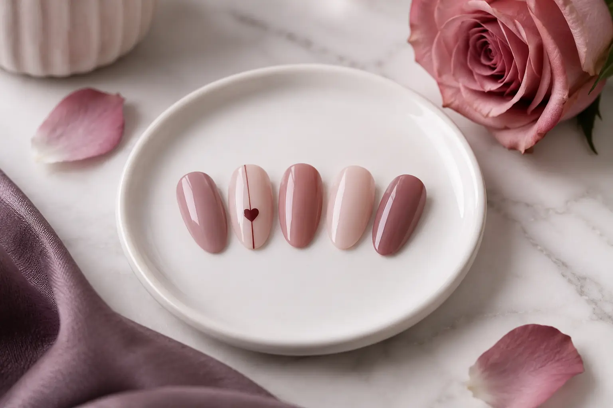

Nagų dizainas Valentino dienai: originalūs akcentai ir adaptacijos
Autorius: Madbeauty redakcija · Numatyta 2027 m. sausio 12 d. 10:00 (Lietuvos laiku)
Palyginkite subtilų ir kontrastingą nagų akcentą, tada pritaikykite pasirinktą idėją trumpiems nagams.

Valentino dienai rinkitės subtilų nagų dizainą su artimais atspalviais ir vienu mažu akcentu arba kontrastingą, kurio pagrindas ir akcentas aiškiai skiriasi. Trumpiems nagams palikite vieną svarbiausią motyvą, o likusią kompoziciją supaprastinkite.
Subtilus ar kontrastingas akcentas
Prieš rinkdamiesi spalvas nuspręskite tris dalykus: koks bus pagrindo ir akcento skirtumas, kokį motyvą norite išryškinti ir kur jis bus. Taip galėsite aiškiai parodyti savo sumanymą ir prireikus jį pritaikyti trumpesniems nagams.
- Subtilus variantas: rinkitės artimus ar švelniai besiskiriančius atspalvius ir vieną nedidelį motyvą, pavyzdžiui, širdelę ar liniją. Iš anksto nuspręskite, ant kurio nago jis bus.
- Kontrastingas variantas: pasirinkite aiškiau išsiskiriantį akcentą. Nuspręskite, kas bus pagrindinis dėmesio taškas – motyvas, spalvinis plotas ar paviršiaus efektas – ir ar norite, kad jis kartotųsi.
- Jei spalvą dar renkatės, peržiūrėkite nagų spalvos pasirinkimo gidą ir išsirinkite pagrindą prieš dėliodami akcentus.
Iliustracijoje pateikti rožinių atspalvių nagų dizaino pavyzdžiai su mažu širdelės akcentu. Tai redakcinė iliustracija, o ne teikėjo darbų galerija.
Kaip pritaikyti idėją trumpiems nagams
Trumpiems nagams nereikia atsisakyti pasirinktos temos. Išsaugokite vieną jums svarbią detalę, o smulkesnius elementus sumažinkite arba palikite nuošalyje. Palyginkite du savo sumanymo eskizus: viename palikite vieną akcentą, kitame – kelis. Pasirinkite tą variantą, kuriame aiškiausiai matyti jūsų pagrindinė idėja.
- Pasirinkite vieną pagrindinį motyvą – širdelę, liniją, atspalvių derinį ar kitą jums patinkantį elementą.
- Pažymėkite, kur norite akcento: ant vieno nago, prie krašto ar kitoje pasirinktoje vietoje.
- Nuspręskite, kurios smulkios detalės nėra būtinos, jei norite paprastesnės kompozicijos.
Ką aptarti dėl atlikimo ir darbų apimties
Nuotrauka ar eskizas padeda perteikti kryptį, tačiau savaime nenusako pasirinktos paslaugos ar jos apimties. Parodykite pagrindo atspalvį, norimą akcentą ir jo vietą. Tada patikslinkite, kokia paslauga būtų atliekama ir ar į jos aprašą įtrauktas nagų dizainas arba papildomi darbai. Ši informacija padeda palyginti pasiūlymus, bet nepatvirtina konkrečios kainos ar prieinamumo.
Pavyzdžiui, jei norite švelnaus pagrindo ir mažos širdelės ant trumpo nago, užrašykite pagrindo atspalvį, nurodykite, ant kurio nago turėtų būti motyvas, ir pridėkite paprastą eskizą. Jei siūloma pakeisti motyvo dydį ar vietą, palyginkite variantus pagal tai, kas jums svarbiausia: pati širdelė, kontrastas ar bendra kompozicija. Tai išgalvotas pavyzdys, o ne tikras kliento darbas ar rezultato garantija.
Trumpa užduotis, kurią galite užsirašyti
- Norimas įspūdis: subtilus arba kontrastingas.
- Pagrindo atspalvis ir akcentas: užrašykite pasirinkimus arba turimą pavyzdį.
- Pagrindinis motyvas ir jo vieta: įvardykite vieną prioritetą.
- Pritaikymas: nurodykite, kad nagai trumpi, ir įvardykite detales, kurių galite atsisakyti.
- Paslaugos apimtis: patikslinkite, ar pasirinkta paslauga apima dizainą ir kokie papildomi darbai būtų reikalingi.
Jei norite ieškoti paslaugos, atverkite nacionalinį nagų dizaino pasirinkimą ir patys pasirinkite miestą. Katalogo kategorija nepatvirtina konkretaus vietinio teikėjo ar laisvo laiko, todėl jos nelaikykite vizito patvirtinimu.